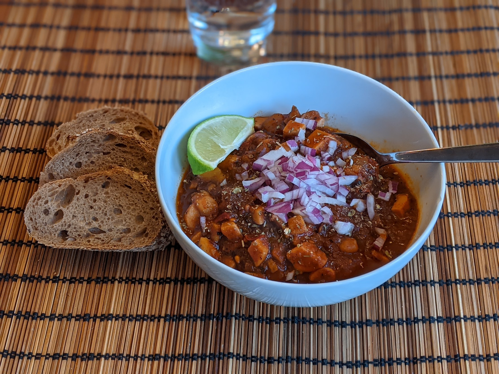

Soupe mexicaine aux champignons

Pour 3-4 personnes :
- Un ou deux piments séchés "Morita"
- Un piment séché "Ancho"
- Un piment séché "Pasilla"
- Trois piments séchés "Guajillo"
- Trois petites patates
- Trois grosses tomates allongées (par exemple, Peretti)
- Un oignon
- Deux gousses d'ail
- 800g de champignons frais, idéalement des pleurotes
- Une cuillère à soupe d'épazote séché
- Trois feuilles de laurier
- Une échalote, ou un petit oignon rouge
- Un peu d'origan séché
- Un citron verts
- Sel, huile d'olive
- Faire bouillir de l'eau. Enlever les pépins et la partie blanche de tous les piments séchés sauf les morita, et les recouvrir d'eau bouillante dans un bol pendant 10 minutes.
- Pendant ce temps, faire bouillir plus d'eau, éplucher et couper les patates en dés, et les faire cuire dans l'eau une dizaine de minutes, jusqu'à ce qu'elles commencent à devenir tendres. Égoutter et réserver.
- Pendant ce temps, faire préchauffer le grill du four, et éplucher l'oignon et l'ail. Laver et couper les tomates en deux, couper l'oignon en deux, et les disposer avec l'ail sur une plaque de four en-dessous du grill jusqu'à ce que ça noircisse bien sur le dessus. Il faut bien surveiller et enlever les légumes au fur et à mesure (l'ail cuit plus vite).
- Mixer les piments et leur eau de trempage avec les tomates, l'oignon et l'ail.
- Laver et couper les champignons en morceaux. Les faire revenir dans un gros pot avec les patates dans de l'huile d'olive, environ 5 minutes à feu fort. Saler et ajouter la sauce au chili, et si besoin un peu d'eau pour que ça recouvre tout juste les légumes. Ajouter l'épazote et le laurier, laisser mijoter à feu doux pendant 25 minutes environ.
- Servir chaud, en garnissant avec de l'échalote ciselée, de l'origan séché, et du citron vert.
Retour à la liste des recettes